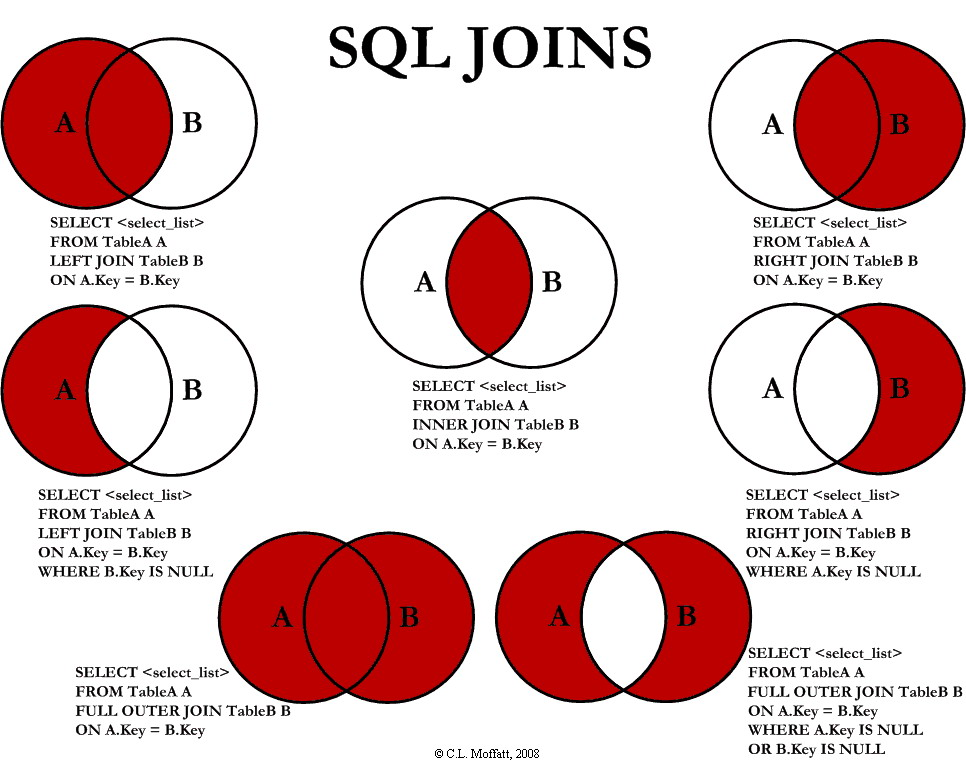

Basic Syntax of MYSQL Statement
[] 为可选
{} 必选
1 增
1.1 创建一个数据库
使用create database语句可完成对数据库的创建, 创建命令的格式如下:
CREATE {DATABASE | SCHEMA} [IF NOT EXISTS] db_name
[create_specification] ...
create_specification:
[DEFAULT] CHARACTER SET [=] charset_name
| [DEFAULT] COLLATE [=] collation_name
例如我们需要创建一个名为samp_db的utf-8数据库, 在命令行下执行以下命令:
mysql> create database company character set utf8;
Query OK, 1 row affected (0.00 sec)
注意: MySQL语句以分号(;)作为语句的结束, 若在语句结尾不添加分号时, 命令提示符会以 -> 提示你继续输入(有个别特例, 但加分号是一定不会错的);
提示: 可以使用 show databases;命令查看已经创建了哪些数据库。
1.2 创建数据库表
使用create table语句可完成对表的创建, create table 的常见形式:
CREATE [TEMPORARY] TABLE [IF NOT EXISTS] table_name
(create_definition,...)
[table_options]
[partition_options]
以创建 employee 表为例, 表中将存放 员工ID(id)、姓名(name)、性别(sex)、年龄(age)、联系电话(tel) 这些内容:
create table employees
（
id int unsigned not null auto_increment primary key,
name char(8) not null,
sex char(4) not null,
age tinyint unsigned not null,
tel char(13) null default "-"
);
mysql> use company;
Database changed
mysql> create table employees
-> (
-> id int unsigned not null auto_increment primary key,
-> name char(8) not null,
-> sex char(4) not null,
-> age tinyint unsigned not null,
-> tel char(13) null default "-"
-> );
Query OK, 0 rows affected (0.01 sec)
对于一些较长的语句在命令提示符下可能容易输错, 因此我们可以通过任何文本编辑器将语句输入好后保存为 createtable.sql 的文件中, 通过命令提示符下的文件重定向执行执行该脚本。
打开命令提示符, 输入:
mysql> mysql -D company -u root -p < createtable.sql
(提示: 1.如果连接远程主机请加上 -h 指令; 2. createtable.sql 文件若不在当前工作目录下需指定文件的完整路径。)
提示: 1. 使用 show tables; 命令可查看已创建了表的名称; 2. 使用 describe 表名; 命令可查看已创建的表的详细信息。
1.3 向表中插入数据
insert 语句可以用来将一行或多行数据插到数据库表中, 使用的一般形式如下:
INSERT [ INTO ] table_name [ (列名1,列名2,列名3 ,...) ] VALUES(值1,值2,值3 ,...);
其中 [] 内的内容是可选的, 例如, 要给 samp_db 数据库中的 students 表插入一条记录, 执行语句:
mysql> insert into employees values(NULL, "王刚", "男", 20, "13811371377");
Query OK, 1 row affected (0.00 sec)
有时我们只需要插入部分数据, 或者不按照列的顺序进行插入, 可以使用这样的形式进行插入:
mysql> insert into employees (name, sex, age) values("孙丽华", "女", 21);
Query OK, 1 row affected (0.01 sec)
1.4 添加/删除索引
MySQL索引的建立对于MySQL的高效运行是很重要的，索引可以大大提高MySQL的检索速度。
打个比方，如果合理的设计且使用索引的MySQL是一辆兰博基尼的话，那么没有设计和使用索引的MySQL就是一个人力三轮车。
索引分单列索引和组合索引。单列索引，即一个索引只包含单个列，一个表可以有多个单列索引，但这不是组合索引。组合索引，即一个索引包含多个列。
创建索引时，你需要确保该索引是应用在 SQL 查询语句的条件(一般作为 WHERE 子句的条件)。
实际上，索引也是一张表，该表保存了主键与索引字段，并指向实体表的记录。
上面都在说使用索引的好处，但过多的使用索引将会造成滥用。因此索引也会有它的缺点：虽然索引大大提高了查询速度，同时却会降低更新表的速度，如对表进行INSERT、UPDATE和DELETE。因为更新表时，MySQL不仅要保存数据，还要保存一下索引文件。
建立索引会占用磁盘空间的索引文件。
普通索引
创建索引
这是最基本的索引，它没有任何限制。它有以下几种创建方式：
CREATE INDEX index_name ON table_name(username(length));
如果是CHAR，VARCHAR类型，length可以小于字段实际长度；如果是BLOB和TEXT类型，必须指定 length。
mysql> CREATE INDEX i_index_employees ON employees(id);
Query OK, 0 rows affected (0.06 sec)
Records: 0 Duplicates: 0 Warnings: 0
显示索引
mysql> show index from employees;
+-----------+------------+-------------------+--------------+-------------+-----------+-------------+----------+--------+------+------------+---------+---------------+
| Table | Non_unique | Key_name | Seq_in_index | Column_name | Collation | Cardinality | Sub_part | Packed | Null | Index_type | Comment | Index_comment |
+-----------+------------+-------------------+--------------+-------------+-----------+-------------+----------+--------+------+------------+---------+---------------+
| employees | 0 | PRIMARY | 1 | id | A | 2 | NULL | NULL | | BTREE | | |
| employees | 1 | i_index_employees | 1 | id | A | 2 | NULL | NULL | | BTREE | | |
+-----------+------------+-------------------+--------------+-------------+-----------+-------------+----------+--------+------+------------+---------+---------------+
2 rows in set (0.00 sec)
修改表结构(添加索引)
ALTER table table_name ADD INDEX indexName(columnName)
mysql> CREATE INDEX k_index_employees ON employees(id,name,sex);
Query OK, 0 rows affected (0.02 sec)
Records: 0 Duplicates: 0 Warnings: 0
创建表的时候直接指定
CREATE TABLE table_name(
field_name1 INT NOT NULL,
field_name2 VARCHAR(16) NOT NULL,
INDEX [indexName] (username(length))
);
eg:
mysql> create table salary
-> (
-> id int unsigned not null auto_increment primary key,
-> years tinyint unsigned not null,
-> money tinyint unsigned not null,
-> INDEX i_salary(id,years)
-> );
Query OK, 0 rows affected (0.02 sec)
mysql> show index from salary;
+--------+------------+----------+--------------+-------------+-----------+-------------+----------+--------+------+------------+---------+---------------+
| Table | Non_unique | Key_name | Seq_in_index | Column_name | Collation | Cardinality | Sub_part | Packed | Null | Index_type | Comment | Index_comment |
+--------+------------+----------+--------------+-------------+-----------+-------------+----------+--------+------+------------+---------+---------------+
| salary | 0 | PRIMARY | 1 | id | A | 0 | NULL | NULL | | BTREE | | |
| salary | 1 | i_salary | 1 | id | A | 0 | NULL | NULL | | BTREE | | |
| salary | 1 | i_salary | 2 | years | A | 0 | NULL | NULL | | BTREE | | |
+--------+------------+----------+--------------+-------------+-----------+-------------+----------+--------+------+------------+---------+---------------+
3 rows in set (0.00 sec)
删除索引的语法
DROP INDEX [index_name] ON table_name;
唯一索引
它与前面的普通索引类似，不同的就是：索引列的值必须唯一，但允许有空值。如果是组合索引，则列值的组合必须唯一。它有以下几种创建方式：
创建索引
CREATE UNIQUE INDEX index_name ON table_name(user_name(length))
修改表结构
ALTER table table_name ADD UNIQUE [index_name] (user_name(length))
创建表的时候直接指定
CREATE TABLE table_name(
field_name1 INT NOT NULL,
field_name2 VARCHAR(16) NOT NULL,
UNIQUE [index_name] (user_name(length))
);
使用ALTER 命令添加和删除索引
有四种方式来添加数据表的索引：
ALTER TABLE table_name ADD PRIMARY KEY (column_list): 该语句添加一个主键，这意味着索引值必须是唯一的，且不能为NULL。
ALTER TABLE table_name ADD UNIQUE index_name (column_list): 这条语句创建索引的值必须是唯一的（除了NULL外，NULL可能会出现多次）。
ALTER TABLE table_name ADD INDEX index_name (column_list): 添加普通索引，索引值可出现多次。
ALTER TABLE table_name ADD FULLTEXT index_name (column_list):该语句指定了索引为 FULLTEXT ，用于全文索引。
具体操作：
mysql> ALTER TABLE salary ADD INDEX k_salary (years,money); # 添加索引
Query OK, 0 rows affected (0.01 sec)
Records: 0 Duplicates: 0 Warnings: 0
mysql> show index from salary;
+--------+------------+----------+--------------+-------------+-----------+-------------+----------+--------+------+------------+---------+---------------+
| Table | Non_unique | Key_name | Seq_in_index | Column_name | Collation | Cardinality | Sub_part | Packed | Null | Index_type | Comment | Index_comment |
+--------+------------+----------+--------------+-------------+-----------+-------------+----------+--------+------+------------+---------+---------------+
| salary | 0 | PRIMARY | 1 | id | A | 0 | NULL | NULL | | BTREE | | |
| salary | 1 | i_salary | 1 | id | A | 0 | NULL | NULL | | BTREE | | |
| salary | 1 | i_salary | 2 | years | A | 0 | NULL | NULL | | BTREE | | |
| salary | 1 | k_salary | 1 | years | A | 0 | NULL | NULL | | BTREE | | |
| salary | 1 | k_salary | 2 | money | A | 0 | NULL | NULL | | BTREE | | |
+--------+------------+----------+--------------+-------------+-----------+-------------+----------+--------+------+------------+---------+---------------+
5 rows in set (0.00 sec)
mysql> ALTER TABLE salary DROP INDEX k_salary;
Query OK, 0 rows affected (0.01 sec)
Records: 0 Duplicates: 0 Warnings: 0
mysql> show index from salary;
+--------+------------+----------+--------------+-------------+-----------+-------------+----------+--------+------+------------+---------+---------------+
| Table | Non_unique | Key_name | Seq_in_index | Column_name | Collation | Cardinality | Sub_part | Packed | Null | Index_type | Comment | Index_comment |
+--------+------------+----------+--------------+-------------+-----------+-------------+----------+--------+------+------------+---------+---------------+
| salary | 0 | PRIMARY | 1 | id | A | 0 | NULL | NULL | | BTREE | | |
| salary | 1 | i_salary | 1 | id | A | 0 | NULL | NULL | | BTREE | | |
| salary | 1 | i_salary | 2 | years | A | 0 | NULL | NULL | | BTREE | | |
+--------+------------+----------+--------------+-------------+-----------+-------------+----------+--------+------+------------+---------+---------------+
3 rows in set (0.00 sec)
使用 ALTER 命令添加和删除主键
mysql> ALTER TABLE salary DROP PRIMARY KEY; # 删除主键
Query OK, 0 rows affected (0.03 sec)
Records: 0 Duplicates: 0 Warnings: 0
mysql> show index from salary;
+--------+------------+----------+--------------+-------------+-----------+-------------+----------+--------+------+------------+---------+---------------+
| Table | Non_unique | Key_name | Seq_in_index | Column_name | Collation | Cardinality | Sub_part | Packed | Null | Index_type | Comment | Index_comment |
+--------+------------+----------+--------------+-------------+-----------+-------------+----------+--------+------+------------+---------+---------------+
| salary | 1 | i_salary | 1 | id | A | 0 | NULL | NULL | | BTREE | | |
| salary | 1 | i_salary | 2 | years | A | 0 | NULL | NULL | | BTREE | | |
+--------+------------+----------+--------------+-------------+-----------+-------------+----------+--------+------+------------+---------+---------------+
2 rows in set (0.00 sec)
mysql> ALTER TABLE salary ADD PRIMARY KEY (id); # 添加主键
Query OK, 0 rows affected (0.03 sec)
Records: 0 Duplicates: 0 Warnings: 0
mysql> show index from salary;
+--------+------------+----------+--------------+-------------+-----------+-------------+----------+--------+------+------------+---------+---------------+
| Table | Non_unique | Key_name | Seq_in_index | Column_name | Collation | Cardinality | Sub_part | Packed | Null | Index_type | Comment | Index_comment |
+--------+------------+----------+--------------+-------------+-----------+-------------+----------+--------+------+------------+---------+---------------+
| salary | 0 | PRIMARY | 1 | id | A | 0 | NULL | NULL | | BTREE | | |
| salary | 1 | i_salary | 1 | id | A | 0 | NULL | NULL | | BTREE | | |
| salary | 1 | i_salary | 2 | years | A | 0 | NULL | NULL | | BTREE | | |
+--------+------------+----------+--------------+-------------+-----------+-------------+----------+--------+------+------------+---------+---------------+
3 rows in set (0.00 sec)
mysql> ALTER TABLE salary MODIFY id INT NOT NULL; # 修改主键不能为空
Query OK, 0 rows affected (0.03 sec)
Records: 0 Duplicates: 0 Warnings: 0
mysql> show index from salary;
+--------+------------+----------+--------------+-------------+-----------+-------------+----------+--------+------+------------+---------+---------------+
| Table | Non_unique | Key_name | Seq_in_index | Column_name | Collation | Cardinality | Sub_part | Packed | Null | Index_type | Comment | Index_comment |
+--------+------------+----------+--------------+-------------+-----------+-------------+----------+--------+------+------------+---------+---------------+
| salary | 0 | PRIMARY | 1 | id | A | 0 | NULL | NULL | | BTREE | | |
| salary | 1 | i_salary | 1 | id | A | 0 | NULL | NULL | | BTREE | | |
| salary | 1 | i_salary | 2 | years | A | 0 | NULL | NULL | | BTREE | | |
+--------+------------+----------+--------------+-------------+-----------+-------------+----------+--------+------+------------+---------+---------------+
3 rows in set (0.00 sec)
2 删
2.1 删除表中的数据
DELETE语句用于删除表中的数据, 基本用法为:
DELETE FROM table_name WHERE conditions;
使用示例:
删除id为2的行: delete from employees where id=2;
删除所有年龄小于21岁的数据: delete from employees where age<20;
删除表中的所有数据: delete from employees;
清空数据表两种方法：
TRUNCATE TABLE table_name;
DELETE FROM table_name;
2.2 删除数据库/表
DROP DATABASE db_name;//删数据库
DROP TABLE table_name
3 改
3.1 更新表数据
UPDATE语句可用来修改表中的数据, 基本的使用形式为:
UPDATE table_name SET column_name = value WHERE conditions;
使用示例:
将id为5的手机号改为默认的”-“: update employees set tel=default where id=5;
将所有人的年龄增加1: update employees set age=age+1;
将手机号为 13288888888 的姓名改为 “张伟”, 年龄改为 19:
UPDATE employees SET name="张伟", age=19 WHERE tel="13288888888";
表中数据追加内容,执行下面的语句就会变成张伟伟
UPDATE employees em SET em.name = CONCAT(em.name,'伟')
3.2 改表结构
创建后表的修改
alter table 语句用于创建后对表的修改, 基础用法如下:
（1）、添加列
ALTER TABLE table_name
ADD [COLUMN] column_name column_definition
[FIRST | AFTER column_name]
示例:
在表的最后追加列 address:
mysql> alter table employees add address char(60);
Query OK, 0 rows affected (0.06 sec)
Records: 0 Duplicates: 0 Warnings: 0
mysql> desc employees;
+---------+---------------------+------+-----+---------+----------------+
| Field | Type | Null | Key | Default | Extra |
+---------+---------------------+------+-----+---------+----------------+
| id | int(10) unsigned | NO | PRI | NULL | auto_increment |
| name | char(8) | NO | | NULL | |
| sex | char(4) | NO | | NULL | |
| age | tinyint(3) unsigned | NO | | NULL | |
| tel | char(13) | YES | | - | |
| address | char(60) | YES | | NULL | |
+---------+---------------------+------+-----+---------+----------------+
6 rows in set (0.00 sec)
在名为 age 的列后插入列 birthday:
mysql> alter table employees add birthday date after age;
Query OK, 0 rows affected (0.08 sec)
Records: 0 Duplicates: 0 Warnings: 0
mysql> desc employees;
+----------+---------------------+------+-----+---------+----------------+
| Field | Type | Null | Key | Default | Extra |
+----------+---------------------+------+-----+---------+----------------+
| id | int(10) unsigned | NO | PRI | NULL | auto_increment |
| name | char(8) | NO | | NULL | |
| sex | char(4) | NO | | NULL | |
| age | tinyint(3) unsigned | NO | | NULL | |
| birthday | date | YES | | NULL | |
| tel | char(13) | YES | | - | |
| address | char(60) | YES | | NULL | |
+----------+---------------------+------+-----+---------+----------------+
7 rows in set (0.01 sec)
（2）、修改列
基本形式: alter table table_name change column_name new_column_name new_type;
示例:
将表 tel 列改名为 telphone:
mysql> alter table employees change tel telphone char(13) default "-";
Query OK, 0 rows affected (0.01 sec)
Records: 0 Duplicates: 0 Warnings: 0
mysql> desc employees;
+----------+---------------------+------+-----+---------+----------------+
| Field | Type | Null | Key | Default | Extra |
+----------+---------------------+------+-----+---------+----------------+
| id | int(10) unsigned | NO | PRI | NULL | auto_increment |
| name | char(8) | NO | | NULL | |
| sex | char(4) | NO | | NULL | |
| age | tinyint(3) unsigned | NO | | NULL | |
| birthday | date | YES | | NULL | |
| telphone | char(13) | YES | | - | |
| address | char(60) | YES | | NULL | |
+----------+---------------------+------+-----+---------+----------------+
7 rows in set (0.00 sec)
将 name 列的数据类型改为 char(16):
mysql> alter table employees change name name char(16) not null;
Query OK, 2 rows affected (0.05 sec)
Records: 2 Duplicates: 0 Warnings: 0
mysql> desc employees;
+----------+---------------------+------+-----+---------+----------------+
| Field | Type | Null | Key | Default | Extra |
+----------+---------------------+------+-----+---------+----------------+
| id | int(10) unsigned | NO | PRI | NULL | auto_increment |
| name | char(16) | NO | | NULL | |
| sex | char(4) | NO | | NULL | |
| age | tinyint(3) unsigned | NO | | NULL | |
| birthday | date | YES | | NULL | |
| telphone | char(13) | YES | | - | |
| address | char(60) | YES | | NULL | |
+----------+---------------------+------+-----+---------+----------------+
7 rows in set (0.00 sec)
（3）、删除列
基本形式: alter table table_name drop column_name;
示例:
删除 birthday 列:
mysql> desc employees;
+----------+---------------------+------+-----+---------+----------------+
| Field | Type | Null | Key | Default | Extra |
+----------+---------------------+------+-----+---------+----------------+
| id | int(10) unsigned | NO | PRI | NULL | auto_increment |
| name | char(16) | NO | | NULL | |
| sex | char(4) | NO | | NULL | |
| age | tinyint(3) unsigned | NO | | NULL | |
| birthday | date | YES | | NULL | |
| telphone | char(13) | YES | | - | |
| address | char(60) | YES | | NULL | |
+----------+---------------------+------+-----+---------+----------------+
7 rows in set (0.00 sec)
mysql> alter table employees drop birthday;
Query OK, 0 rows affected (0.07 sec)
Records: 0 Duplicates: 0 Warnings: 0
mysql> desc employees;
+----------+---------------------+------+-----+---------+----------------+
| Field | Type | Null | Key | Default | Extra |
+----------+---------------------+------+-----+---------+----------------+
| id | int(10) unsigned | NO | PRI | NULL | auto_increment |
| name | char(16) | NO | | NULL | |
| sex | char(4) | NO | | NULL | |
| age | tinyint(3) unsigned | NO | | NULL | |
| telphone | char(13) | YES | | - | |
| address | char(60) | YES | | NULL | |
+----------+---------------------+------+-----+---------+----------------+
6 rows in set (0.00 sec)
(4)、重命名表
基本形式: alter table table_name rename new_table_name;
示例:
重命名 employee 表为 workmates:
mysql> show tables;
+-------------------+
| Tables_in_company |
+-------------------+
| employees |
| salary |
+-------------------+
2 rows in set (0.00 sec)
mysql> alter table employees rename workmates;
Query OK, 0 rows affected (0.00 sec)
mysql> show tables;
+-------------------+
| Tables_in_company |
+-------------------+
| salary |
| workmates |
+-------------------+
2 rows in set (0.00 sec)
(5）、删除整张表
基本形式: drop table table_name;
(6)、删除整个数据库
基本形式: drop database database_name;
mysql> alter table employees add first_name char(8) after name;
Query OK, 0 rows affected (0.06 sec)
Records: 0 Duplicates: 0 Warnings: 0
mysql> alter table employees add last_name char(8) after name;
Query OK, 0 rows affected (0.07 sec)
Records: 0 Duplicates: 0 Warnings: 0
mysql> alter table employees drop name;
Query OK, 0 rows affected (0.08 sec)
Records: 0 Duplicates: 0 Warnings: 0
mysql> desc employees;
+------------+---------------------+------+-----+---------+----------------+
| Field | Type | Null | Key | Default | Extra |
+------------+---------------------+------+-----+---------+----------------+
| id | int(10) unsigned | NO | PRI | NULL | auto_increment |
| last_name | char(8) | YES | | NULL | |
| first_name | char(8) | YES | | NULL | |
| sex | char(4) | NO | | NULL | |
| age | tinyint(3) unsigned | NO | | NULL | |
| telphone | char(13) | YES | | - | |
| address | char(60) | YES | | NULL | |
+------------+---------------------+------+-----+---------+----------------+
7 rows in set (0.00 sec)
mysql> alter table employees add country char(8) after address;
Query OK, 0 rows affected (0.06 sec)
Records: 0 Duplicates: 0 Warnings: 0
mysql> desc employees;
+------------+---------------------+------+-----+---------+----------------+
| Field | Type | Null | Key | Default | Extra |
+------------+---------------------+------+-----+---------+----------------+
| id | int(10) unsigned | NO | PRI | NULL | auto_increment |
| last_name | char(8) | YES | | NULL | |
| first_name | char(8) | YES | | NULL | |
| sex | char(4) | NO | | NULL | |
| age | tinyint(3) unsigned | NO | | NULL | |
| telphone | char(13) | YES | | - | |
| address | char(60) | YES | | NULL | |
| country | char(8) | YES | | NULL | |
+------------+---------------------+------+-----+---------+----------------+
8 rows in set (0.00 sec)
ALTER TABLE db.table1 ADD COLUMN new_field int(5) NOT NULL AFTER field2; --添加字段
ALTER TABLE db.table1 CHANGE COLUMN field_name new_field_name varchar(100) CHARACTER SET utf8 COLLATE utf8_general_ci NOT NULL AFTER `id`; --修改字段
ALTER TABLE db.table1 DROP COLUMN field1; --删除字段
ALTER TABLE db.table1 ADD UNIQUE INDEX index_name USING BTREE (field1); --添加索引
ALTER TABLE db.table1 DROP PRIMARY KEY, --删除主键
ADD PRIMARY KEY (id); --修改主键
ALTER TABLE db.table1 DROP INDEX index_name, --删除索引
ADD FULLTEXT INDEX index_name USING BTREE (field1); --添加索引
INSERT INTO table1 VALUES (value1, value2, valueAll);
INSERT INTO table1(field1, field2) VALUES (value1, value2);
UPDATE table1 SET field1='value1', field2='value2' WHERE field3='value3';
4 查
4.1 SELECT 语法
Select语句的完整语法为：
Select[ALL|DISTINCT|DISTINCTROW|TOP] {*|talbe.*|[table.]field1[AS alias1][,[table.]field2[AS alias2][,…]]} FROM tableexpression[,…][IN externaldatabase] [Where…] [GROUP BY…] [HAVING…] [ORDER BY…] [WITH OWNERACCESS OPTION]
说明：
用中括号([])括起来的部分表示是可选的，用大括号({})括起来的部分是表示必须从中选择其中的一个。
1、FROM子句
FROM子句指定了Select语句中字段的来源。FROM子句后面是包含一个或多个的表达式(由逗号分开)，其中的表达式可为单一表名称、已保存的查询或由 INNER JOIN、LEFT JOIN 或 RIGHT JOIN 得到的复合结果。如果表或查询存储在外部数据库，在IN 子句之后指明其完整路径。
例：下列SQL语句返回所有有定单的客户：
SELECT e.* FROM employees e, salary s WHERE e.id = s.id;
2、ALL、DISTINCT、DISTINCTROW、TOP谓词
(1)、ALL 返回满足SQL语句条件的所有记录。如果没有指明这个谓词，默认为ALL。
例：SELECT ALL first_name,last_name FROM employees;
- (2)、DISTINCT 如果有多个记录的选择字段的数据相同，只返回一个。
- (3)、DISTINCTROW 如果有重复的记录，只返回一个
3、用 AS 子句为字段取别名
如果想为返回的列取一个新的标题，或者，经过对字段的计算或总结之后，产生了一个新的值，希望把它放到一个新的列里显示，则用AS保留。
-- 例：返回FirstName字段取别名为NickName
SELECT first_nam AS nick_nam, last_nam FROM employees;
4.2 Where 子句指定查询条件
1、比较运算符
比较运算符 含义
= 等于
> 大于
< 小于
>= 大于等于
<= 小于等于
<> 不等于
!> 不大于
!< 不小于
IN 运算符用来匹配列表中的任何一个值。IN子句可以代替用OR子句连接的一连串的条件。
LIKE运算符检验一个包含字符串数据的字段值是否匹配一指定模式。
LIKE运算符里使用的通配符
通配符 含义
？ 任何一个单一的字符
* 任意长度的字符
# 0~9之间的单一数字
[字符列表] 在字符列表里的任一值
[!字符列表] 不在字符列表里的任一值
- 指定字符范围，两边的值分别为其上下限
IN('value1','value2','value3') --限定值
BETWEEN 'A' AND 'C' --限定范围，即：徘徊于牛A与牛C之间。
LIKE '%abc%' --模糊查询
% --替代n个字符
_ --替代一个字符
[abcd] --限定为字符列表中的任一的字符
[^abcd] 或 [!abcd] --限定为排除字符列表中的任一的字符
SELECT DISTINCT field_name1, field_name2 FROM table_name;-- DISTINCT --值不重复
SELECT * FROM table_name1 WHERE field_name1='value';
SELECT * FROM table_name1 WHERE (field_name1='value1' OR field_name2='value2') AND field_name3='[abc]%';
SELECT * FROM table_name1 ORDER BY field_name1 DESC, field_name2 ASC; --若两个字段排序规则相同：ORDER BY field_name1, field_name2 DESC
SELECT * FROM table_name1 LIMIT start, length; --查询指定的记录
SELECT TOP 10 PERCENT * FROM table_name1; --这是标准的SQL语句，查得前百分之十的记录，不加 PERCENT 则是前10条
SELECT t1.field_name1, t2.field_name2 FROM table_name1 AS t1, table2 AS t2 WHERE t1.field_name2=t2.field_name3; --表取别名
SELECT field_name1 AS f1 FROM table_name1; --字段取别名
SELECT * FROM table_name1 AS t1 FULL JOIN table2 AS t2; --无条件完全组合在一起
SELECT * FROM table_name1 AS t1 INNER JOIN table2 AS t2 ON t1.field_name1=t2.field_name1; --内连接，查询满足条件的记录（也可直接写JOIN）。
SELECT * FROM table_name1 AS t1 LEFT JOIN table2 AS t2 ON t1.field_name1=t2.field_name1; --查询的表排列的顺序是从左到右，这是左连接，故以左边的表为主表，即：返回所有满足条件的记录，而主表中不满足条件的记录同样返回。
SELECT * FROM table_name1 AS t1 RIGHT JOIN table2 AS t2 ON t1.field_name1=t2.field_name1; --同理于上，反之而行
SELECT field_name1, field_name2 FROM table_name1 UNION SELECT field_name1, field_name2 FROM table2; --联合两张表的查询结果，要求查询字段必然数量相等
SELECT field_name1, field_name2 FROM table_name1 UNION ALL SELECT field_name1, field_name2 FROM table2; --上面不显示重复值，加上 ALL 表示全部
SELECT field_name1, field_name2 INTO table2 FROM table_name1 WHERE table_name1.field_name3='value'; --拷贝表的效果
SELECT * INTO table2 IN 'Backup.mdb' FROM table_name1; --向另一个数据库中拷贝表
SELECT field_name1, SUM(field_name2) FROM table_name1 GROUP BY field_name3; --用于结合合计函数，根据一个或多个列对结果集进行分组。
SELECT field_name1,SUM(field_name2) FROM table_name1 HAVING SUM(OrderPrice)<2000; --WHERE无法与合计函数一起使用 ,HAVING 应运而生。
4.3 ORDER BY子句排序结果
ORDER子句按一个或多个（最多16个）字段排序查询结果，可以是升序（ASC）也可以是降序（DESC），缺省是升序。ORDER子句通常放在SQL语句的最后。
orDER子句中定义了多个字段，则按照字段的先后顺序排序。
例:
SELECT field_name1, field_name2, field_name3 FROM table_name ORDER BY field_nam1 DESC, field_nam2 DESC, field_nam3
-- ORDER BY 子句中可以用字段在选择列表中的位置号代替字段名，可以混合字段名和位置号。
-- 下面的语句产生与上列相同的效果。
SELECT field_name1, field_name2, field_name3 FROM table_name ORDER BY 1 DESC, 2 DESC, 3
4.4 运用连接关系实现多表查询
CodeProject 上 C.L. Moffatt 的文章总结了JIONS之间的关系Visual Representation of SQL Joins
- Inner Join
- Left Join
- Right Join
- Outer Join
- Left Join excluding Inner Join
- Right Join excluding Inner Join
- Outer Join excluding Inner Join

连接类型，可分为三种：内连接、外连接和交叉连接。内连接(INNER JOIN)使用比较运算符进行表间某(些)列数据的比较操作，并列出这些表中与连接条件相匹配的数据行。根据所使用的比较方式不同，内连接又分为等值连接、自然连接和不等连接三种。
外连接分为左外连接(LEFT OUTER JOIN或LEFT JOIN)、右外连接(RIGHT OUTER JOIN或RIGHT JOIN)和全外连接(FULL OUTER JOIN或FULL JOIN)三种。与内连接不同的是，外连接不只列出与连接条件相匹配的行，而是列出左表(左外连接时)、右表(右外连接时)或两个表(全外连接时)中所有符合搜索条件的数据行。
交叉连接(CROSS JOIN)没有WHERE 子句，它返回连接表中所有数据行的笛卡尔积，其结果集合中的数据行数等于第一个表中符合查询条件的数据行数乘以第二个表中符合查询条件的数据行数。
连接操作中的ON (join_condition) 子句指出连接条件，它由被连接表中的列和比较运算符、逻辑运算符等构成。
在内连接和外连接中使用的关键字 USING 。其作用是为了方便书写联结的多对应关系，大部分情况下USING语句可以用ON语句来代替。有以下语句：
r_table_name a LEFT JOIN l_table_name b USING (c1, c2, c3)
得到的结果为：
COALESCE(a.c1, b.c1), COALESCE(a.c2, b.c2), COALESCE(a.c3, b.c3)
上述语句的效果基本上等价于：
r_table_name a LEFT JOIN l_table_name b ON a.c1 = b.c1 AND a.c2 = b.c2 AND a.c3 = b.c3
得到的结果为：
a.c1, a.c2, a.c3, b.c1, b.c2, b.c3
USING 所指定的列必须在两个相连的表中都存在，然后会将指定的列进行合并（列值总是等于驱动表对应的列值），即不会因为两个进行相连的表有同名列而发生冲突（当然只是针对于 USING 中指定的列）。
4.5 分组和总结查询结果
1、在SQL的语法里，GROUP BY和HAVING子句用来对数据进行汇总。GROUP BY子句指明了按照哪几个字段来分组，而将记录分组后，用HAVING子句过滤这些记录。
GROUP BY 子句的语法
Select field_name FROM table_name Where criteria [GROUP BY group_field_list [HAVING group_criteria]] [WITH ROLLUP]
HAVING 条件表达式：用来限制分组后的显示，符合条件表达式的结果将被显示。
WITH ROLLUP：将会在所有记录的最后加上一条记录。加上的这一条记录是上面所有记录的总和。
GROUP BY字段中的Null值以备分组但是不能被省略。 在任何SQL合计函数中不计算Null值。
GROUP BY子句后最多可以带有十个字段，排序优先级按从左到右的顺序排列。
例：在‘WA’地区的雇员表中按头衔分组后，找出具有同等头衔的雇员数目大于1人的所有头衔。
SELECT sex , COUNT(sex) FROM employees WHERE age > 20 GROUP BY sex;
mysql> SELECT sex , COUNT(sex) FROM employees WHERE age > 20 GROUP BY sex;
+-----+------------+
| sex | COUNT(sex) |
+-----+------------+
| 女 | 1 |
+-----+------------+
1 row in set (0.00 sec)
聚集函数 意义
SUM ( ) 求和
AVG ( ) 平均值
COUNT ( ) 表达式中记录的数目
COUNT (* ) 计算记录的数目
MAX 最大值
MIN 最小值
VAR 方差
STDEV 标准误差
FIRST 第一个值
LAST 最后一个值
2、GROUP BY联合函数使用：
1）GROUP BY关键字可以和GROUP_CONCAT()函数一起使用。
2）GROUP_CONCAT()函数会把每个分组中指定的字段值都显示出来。
3）同时，GROUP BY关键字通常与集合函数一起使用。集合函数包括COUNT()函数、SUM()函数、AVG()函数、MAX()函数和MIN()函数等。
4）注意：如果GROUP BY不与上述函数一起使用，那么查询结果就是字段取值的分组情况。字段中取值相同的记录为一组，但是只显示该组的第一条记录。
该实例说明，使用GROUP_CONCAT()函数可以很好的把分组情况表示出来。
mysql> select * from employees;
+----+-----------+------------+-----+-----+-------------+----------+---------+
| id | last_name | first_name | sex | age | telphone | address | country |
+----+-----------+------------+-----+-----+-------------+----------+---------+
| 1 | NULL | NULL | 男 | 20 | 13811371377 | NULL | NULL |
| 2 | NULL | NULL | 女 | 21 | - | NULL | NULL |
| 3 | B | A | 男 | 20 | 13811371377 | AAAAAAAA | BBB |
| 4 | M | A | 男 | 20 | 13811371377 | AAAAAAA2 | US |
| 5 | A | A | 男 | 22 | 13811371477 | AAAAAAA3 | CN |
| 6 | C | A | 男 | 23 | 13811371577 | AAAAAAA4 | US |
| 7 | D | A | 男 | 24 | 13811371677 | AAAAAAA5 | US |
| 8 | E | A | 男 | 25 | 13811371777 | AAAAAAA6 | CN |
| 9 | F | A | 男 | 26 | 13811371877 | AAAAAAA7 | US |
| 10 | H | A | 男 | 27 | 13811371977 | AAAAAAA8 | CN |
| 11 | I | A | 男 | 28 | 13811371077 | AAAAAAA9 | US |
| 12 | G | A | 男 | 29 | 13811372377 | AAAAAAA0 | US |
| 13 | K | A | 男 | 30 | 13811373377 | AAAAAAA- | CN |
| 14 | L | A | 男 | 40 | 13811374377 | AAAAAAAe | US |
| 15 | N | A | 男 | 50 | 13811375377 | AAAAAAAs | CN |
+----+-----------+------------+-----+-----+-------------+----------+---------+
15 rows in set (0.00 sec)
mysql> SELECT sex,GROUP_CONCAT(first_name, last_name) FROM employees GROUP BY sex WITH ROLLUP;
+-----+----------------------------------------+
| sex | GROUP_CONCAT(first_name, last_name) |
+-----+----------------------------------------+
| 女 | NULL |
| 男 | AB,AM,AA,AC,AD,AE,AF,AH,AI,AG,AK,AL,AN |
| NULL | AB,AM,AA,AC,AD,AE,AF,AH,AI,AG,AK,AL,AN |
+-----+----------------------------------------+
3 rows in set (0.00 sec)
WITH ROLLUP：将会在所有记录的最后加上一条记录。加上的这一条记录是上面所有记录的总和。
mysql> SELECT sex,COUNT(sex) FROM employees GROUP BY sex WITH ROLLUP;
+-----+------------+
| sex | COUNT(sex) |
+-----+------------+
| 女 | 1 |
| 男 | 14 |
| NULL | 15 |
+-----+------------+
3 rows in set (0.00 sec)
GROUP BY关键字与HAVING一起使用。使用GROUP BY关键字时，如果加上“HAVING 条件表达式”，则可以限制输出的结果。只有符合条件表达式的结果才会显示。
实例：将employee表的sex字段进行分组查询。然后显示记录数大于等于3的分组。
SELECT语句的代码如下：
mysql> SELECT sex,COUNT(sex) FROM employees GROUP BY sex HAVING COUNT(sex)>=3;
+-----+------------+
| sex | COUNT(sex) |
+-----+------------+
| 男 | 14 |
+-----+------------+
1 row in set (0.00 sec)
按照多个字段进行分组，在MySQL中，还可以按照多个字段进行分组。
SELECT语句的代码如下：
mysql> SELECT * FROM employees GROUP BY country,id;
+----+-----------+------------+-----+-----+-------------+----------+---------+
| id | last_name | first_name | sex | age | telphone | address | country |
+----+-----------+------------+-----+-----+-------------+----------+---------+
| 1 | NULL | NULL | 男 | 20 | 13811371377 | NULL | NULL |
| 2 | NULL | NULL | 女 | 21 | - | NULL | NULL |
| 3 | B | A | 男 | 20 | 13811371377 | AAAAAAAA | BBB |
| 5 | A | A | 男 | 22 | 13811371477 | AAAAAAA3 | CN |
| 8 | E | A | 男 | 25 | 13811371777 | AAAAAAA6 | CN |
| 10 | H | A | 男 | 27 | 13811371977 | AAAAAAA8 | CN |
| 13 | K | A | 男 | 30 | 13811373377 | AAAAAAA- | CN |
| 15 | N | A | 男 | 50 | 13811375377 | AAAAAAAs | CN |
| 4 | M | A | 男 | 20 | 13811371377 | AAAAAAA2 | US |
| 6 | C | A | 男 | 23 | 13811371577 | AAAAAAA4 | US |
| 7 | D | A | 男 | 24 | 13811371677 | AAAAAAA5 | US |
| 9 | F | A | 男 | 26 | 13811371877 | AAAAAAA7 | US |
| 11 | I | A | 男 | 28 | 13811371077 | AAAAAAA9 | US |
| 12 | G | A | 男 | 29 | 13811372377 | AAAAAAA0 | US |
| 14 | L | A | 男 | 40 | 13811374377 | AAAAAAAe | US |
+----+-----------+------------+-----+-----+-------------+----------+---------+
15 rows in set (0.00 sec)
4.6 联合查询
UNION运算可以把多个查询的结果合并到一个结果集里显示.
UNION运算的一般语法:
SELECT field_name1, field_name2, ... field_namen
FROM table_name1
[WHERE conditions]
UNION [ALL | DISTINCT]
SELECT field_name1, field_name2, ... field_name1n
FROM table_name
[WHERE conditions];
UNION运算要求查询具有相同数目的字段.但是,字段数据类型不必相同.
每一个查询参数中可以使用GROUP BY 子句 或 HAVING 子句进行分组.要想以指定的顺序来显示返回的数据,可以在最后一个查询的尾部使用OREER BY子句.